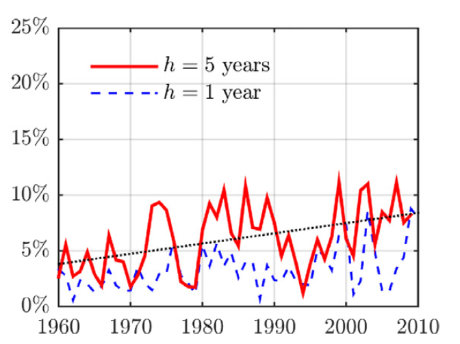

|
March XX, 2021 Does AI make financial markets more informative and socially useful? Artificial Intelligence (AI) and the exponential growth of data that can be analyzed by algorithms is transforming the way investors can forecast corporate success. The techno-optimist view is that AI-augmented investors have a greater ability to identify valuable companies. This makes stock prices more informative about companies' prospect, which, so the argument goes, is socially valuable because informative stock prices provide accurate signals for resource allocation. This potential virtuous effect of AI hinges on the presumption that AI has made financial markets more informative. But is it true? To answer this question, we need an objective measure of how informative financial markets are. To be more specific, we need a measure of whether the stock price of a company today is a good predictor of the profitability of the company in the future. Answering this question for today's stock prices is not possible because we do not the future (yet). But it is possible to determine whether the stock market was informative in the past because, with the benefit of hindsight, we know whether past stock prices were right or wrong. In an article published in 2016 the Journal of Financial Economics, three researchers[1] followed to assess whether the U.S. stock market has become more informative over time. They construct a measure of well stock prices at a given point in time predicts future corporate earnings. Their information of price informativeness is plotted in the figure below. A note at the bottom of the page explains how exactly they construct this measure. The data shows a clear, long-term positive trend in market informativeness; that is, the stock market has become more informative over time. What is striking though is that the positive trend predates the widespread adoption of algorithms in finance in the early 2000s. The reason is that information processing costs have steadily decreased over time through the computerization of the industry, well before the arrival of AI. However, two recent articles bring a more nuanced view to the impact of AI. Big data for big firms In a recent article forthcoming in the Review of Financial Studies, four other researchers confirmed that stock prices have become more informative for large listed firms, but they show that the trend is opposite for mid caps and smaller firms outside the S\&P 500. Their explanation is that large firms generate of lot data as a result of their extended economic activity, and AI is performs very well at forecasting in data-rich environments. In contrast, smaller firms and younger firms generate less data and have shorter histories of earnings statements that can feed algorithms. The fact that improved informativeness is concentrated on large firms may be good or bad depending on how you look at it. On the positive side, large firms make up a large share of the economy, so informative stock prices for large firms has a large beneficial impact. On the negative side, a great deal of innovation and the future of the economy lies in new firms. It is important markets provide accurate signals about which new firms have good prospects. From this perspective, the trend is not as good. Artificial Intelligence for the short term, Human Intelligence for the long term In a new working paper, three other researchers extend the analysis until the very recent period and uncover a striking pattern. They find that since the early 2000s, which corresponds to the widespread adoption of algorithms in finance, the forecasting accuracy keeps on improving for short-term earnings but there is a reversal in the forewasting accuracy of long-term forecasts. In other words, financial markets become better and better at predicting the short term but worse and worse at predicting the long term. Their explanation is that alternative data crunched by algorithms predominantly contain information about firms' short-term prospects. Internet data like the number of visits on a retailer's website contain information about next quarter earnings. In contrast, forecasting long-term prospects requires human judgements to anticipate and understand firms' strategic and innovation choices. This trend if confirmed is unfortunate. The near future will be known soon by definition, so information about the near future brought about by financial markets is not so useful for corporate managers and entrepreneurs. In contrast, information about the long term is more important for allocating resources. For example, the extent to which climate risk is accurately reflected in asset prices determines whether capital markets allocate capital away from sectors exposed to climate risk (but it is not the only determinant -- I will write more on this topic soon!) Sources + Research at HEC [1] The article taking a long term-perspective on market informativeness by Bai, Philippon and Savov, 2016, Have financial markets become more informative? Journal of Financial Economics [link to paper] [2] The article on big firms versus smaller firms is by Farboodi, Matray, Veldkamp and Venkateswaran, Where Has All the Data Gone? forthcoming Review of Financial Studies. Adrien Matray is a graduate of the HEC Grande Ecole and PhD programs, now Assistant Professor at Princeton. [3] The working paper on short-term versus long-term forecasting accuracy is by Dessaint, Frésard and Foucault. Olivier Dessaint is a graduate of the HEC PhD program, now Associate Professor at Insead. Laurent Frésard is former finance professor at HEC. Thierry Foucault is a finance professor at HEC and scientific co-director of the Hi!Paris Center that studies applications of articifial intelligence in finance and other fields. Technical note. To construct their measure of price informative, Bai, Philippon and Savov estimate a model that forecasts future earnings based on current accounting information. They calculate the R2 of the model, which measures how well the accounting variables used in the model predicts future earnings. Then, they add the current stock price to the model, re-estimate it, and look at how much the R2 improves. The increase in R2 between the model that does not use the stock price information and the model does (called the partial R2) measures the contribution of the stock price information to forecast future earnings. This is what is plotted on the figure in the blog post. |